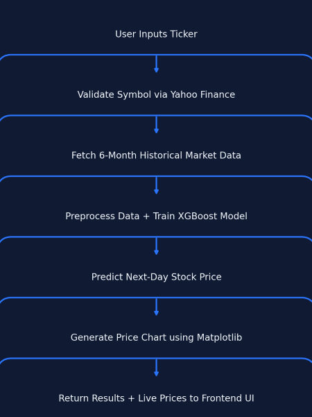

Stock Price Predictor — AI-Driven Financial Forecasting
A machine learning project that predicts next-day stock closing prices using real-time market data, trend indicators and XGBoost regression. It supports any global stock ticker and generates interactive forecasting charts to assist traders and investors.

Project Overview
Stock Price Predictor analyzes real market data from Yahoo Finance and predicts the upcoming closing price based on short-term and long-term trends. It demonstrates the power of ML regression in financial forecasting and highlights the limitations of prediction in volatile markets.
- 💹 Fetches live historical market data using Yahoo Finance API
- ⚙️ Performs feature engineering using SMA, EMA, volatility & momentum indicators
- 🤖 Trains financial time-series regression using XGBoost
- 📉 Visualizes forecast vs actual values for decision support
- 🌍 Supports global stocks: NASDAQ, NYSE, NSE, crypto tickers & more
Key Features
Built for finance learners, traders, and analysts to leverage machine learning in market forecasting.
AI-Based Price Forecasting
Uses XGBoost to model market trends and predict next-day closing price.
Supports Every Global Stock
Works with tickers from NSE, NASDAQ, NYSE, DOW, crypto symbols and more.
Visual Forecast Analysis
Generates comparative charts for actual vs predicted price movement.
Prediction Workflow
- ✔ User inputs ticker symbol (e.g., RELIANCE.NS / TSLA / AAPL)
- ✔ Yahoo Finance API fetches 6-month benchmark dataset
- ✔ Technical indicators extracted via feature engineering
- ✔ Trained XGBoost model predicts next-day price
- ✔ Matplotlib visualizes market trend and prediction output
Model Performance
| Model | MAE | RMSE | R² Score |
|---|---|---|---|
| Linear Regression | 8.91 | 11.56 | 0.76 |
| XGBoost (Best) | 5.02 | 7.34 | 0.89 |
📌 XGBoost outperformed linear regression due to its ability to capture volatility and non-linear market trends.
{kind=link}
{kind=link}
Challenges & Learnings
Challenges Faced
- ⚠ High volatility causing sudden price spikes
- ⚠ Choosing reliable error metrics for stock forecasting
- ⚠ Handling missing values during holidays/weekends
Key Learnings
- 🟢 Technical indicators significantly improve model accuracy
- 🟢 Real-world finance requires cross-validation to avoid overfitting
- 🟢 Visualization helps convert ML predictions into decision-based insights
Want to explore the code?
Notebooks include complete EDA, ML training workflow, hyperparameter tuning and forecasting logic.
Browse Full GitHub Repository